Bungou Stray Dogs
Temporada uno
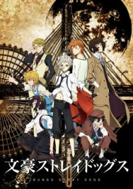Sinopsis
Habiendo sido expulsado del orfanato y estando a punto de morir de hambre, Atsushi Nakajima conoce a unos hombres. Ambos son miembros de la Agencia Armada de Detectives que se dice que puede resolver cualquier incidente, incluso aquellos que la policía y el ejército no se atreven a investigar. Atsushi acaba acompañándolos en una misión. En la ciudad de Yokohama hay personas que ostentan el nombre de grandes maestros literarios y que poseen poderes inusuales vinculados a su nombre. Este es el inicio de la batalla entre los misteriosos poderes de la Agencia Armada de Detectives y la Port Mafia.
-
Capitulo 1
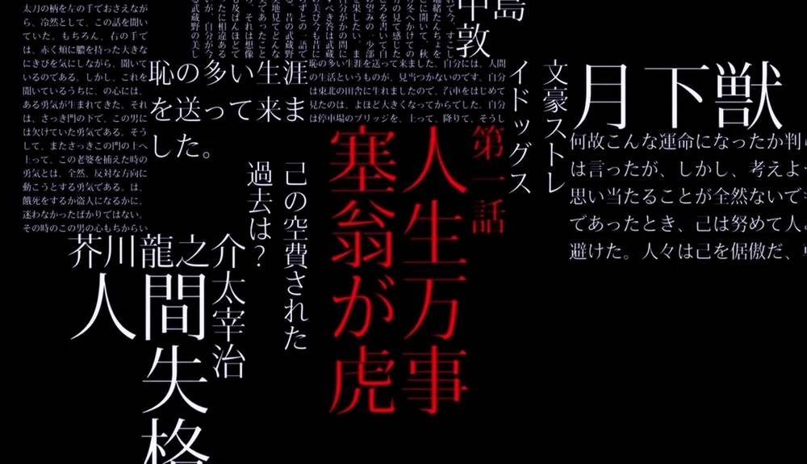Es impredecible y la fortuna mutable
-
Capitulo 2
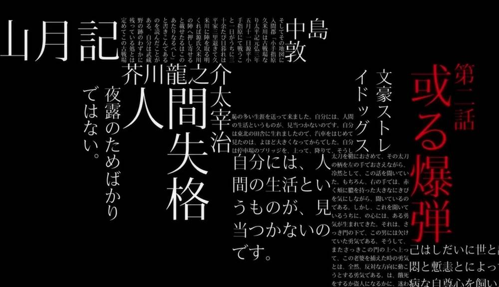Cierta Bomba
-
Capitulo 3
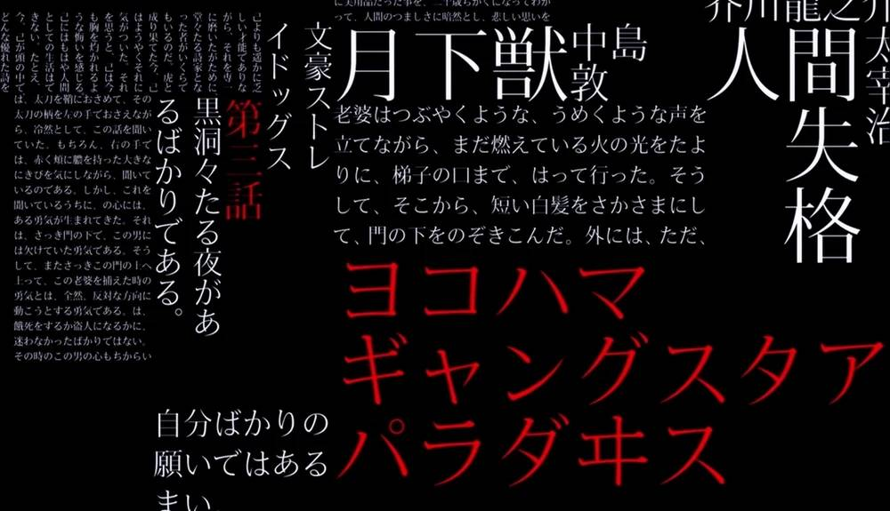Yokohama Gangster Paradise
-
Capitulo 4
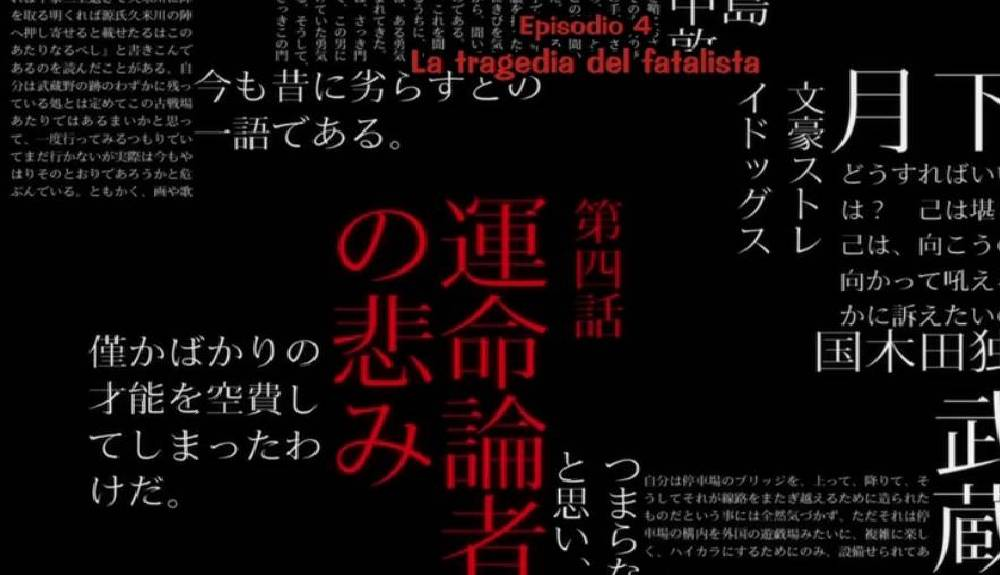Yokohama Gangster Paradise
-
Capitulo 5
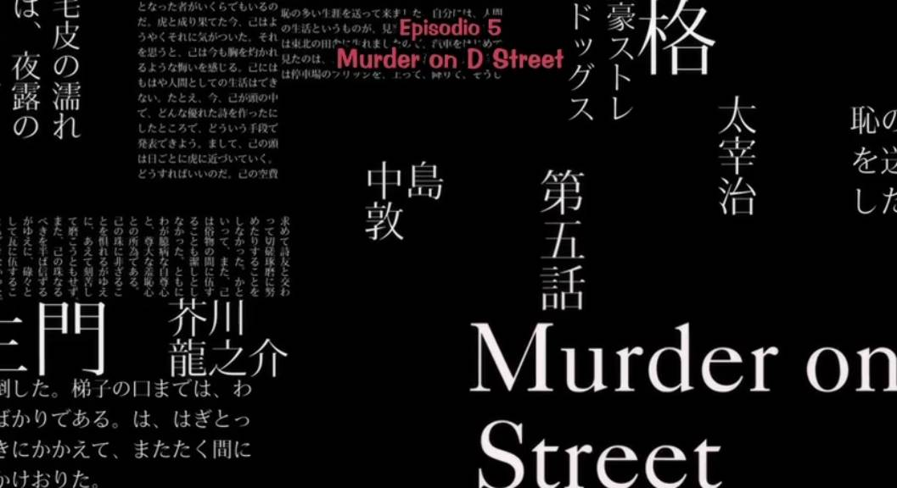Murder on D Street
-
Capitulo 6
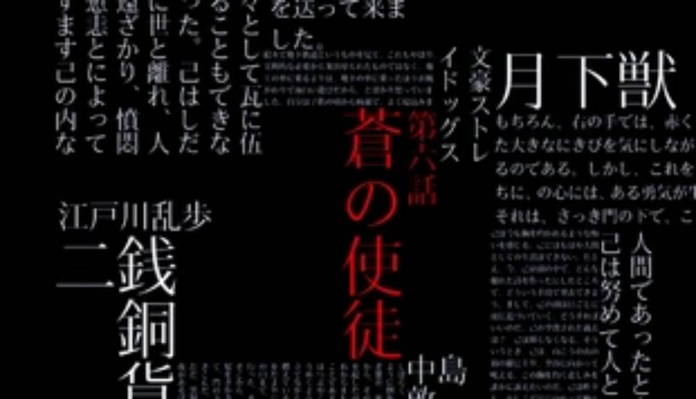El mensajero azul
-
Capitulo 7
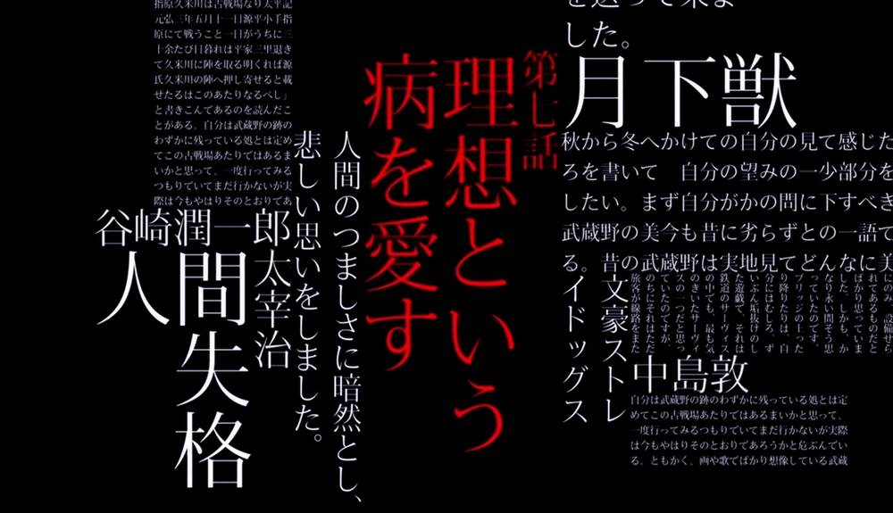Amor por la enfermedad llamada ideales
-
Capitulo 8
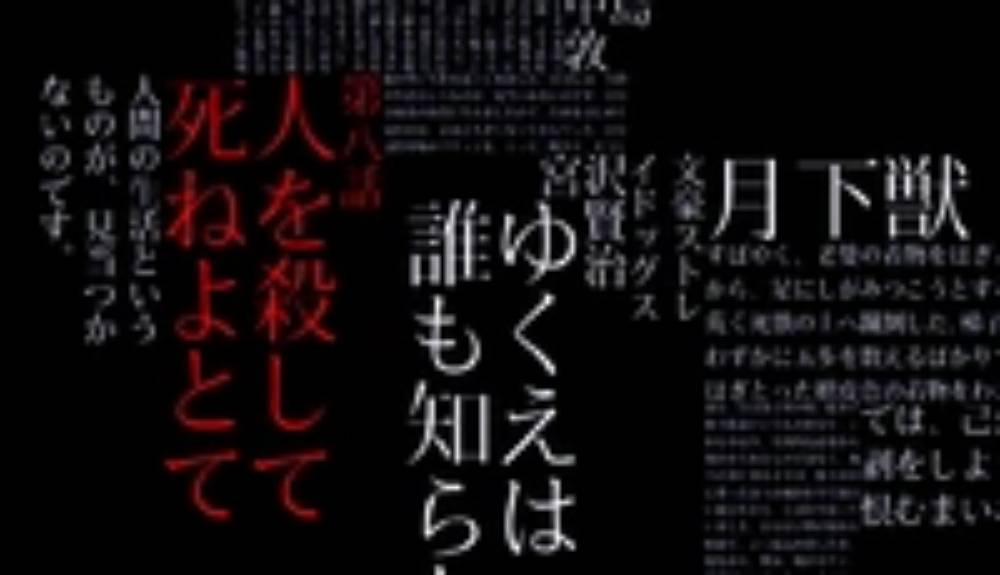Enseñándoles a matar; luego a morir
-
Capitulo 9
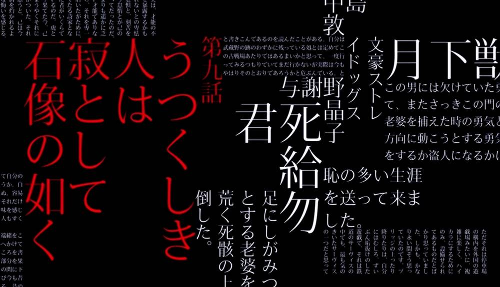La belleza es silenciosa
como una estatua de piedra -
Capitulo 10
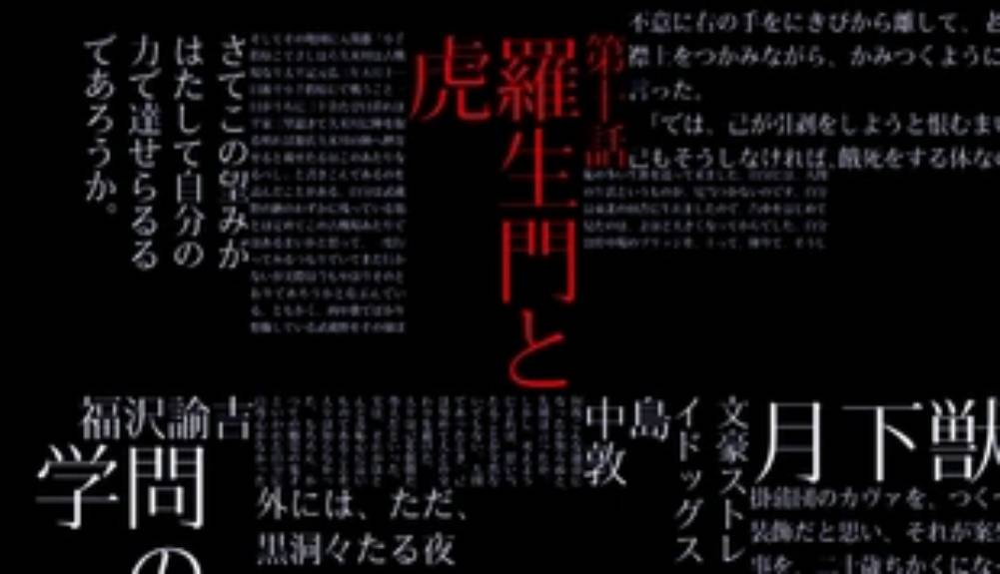Rashomon y el tigre
-
Capitulo 11
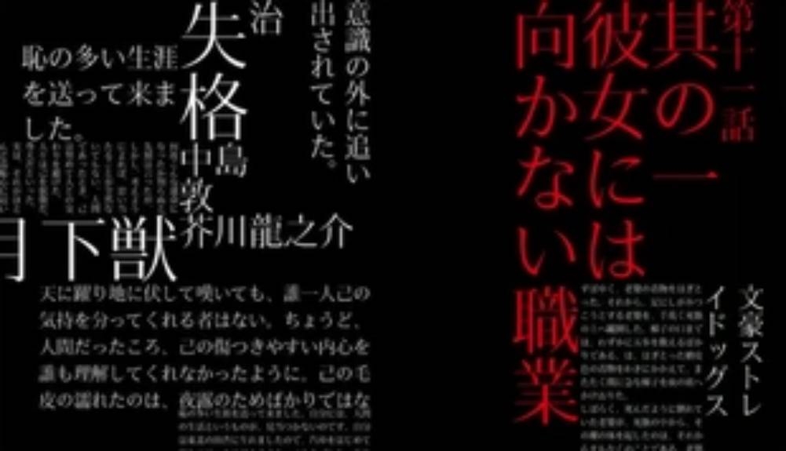Primero, una profesión inadecuada
para ella. -
Capitulo 12
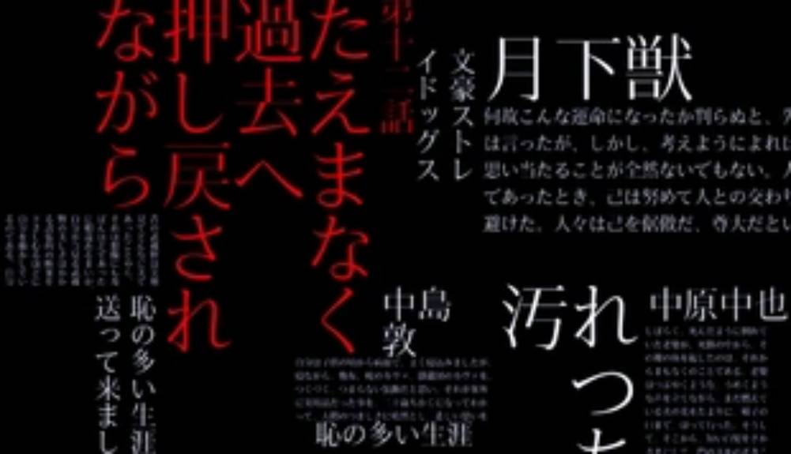Transmitidas de vuelta incesantemente
hacia el pasado